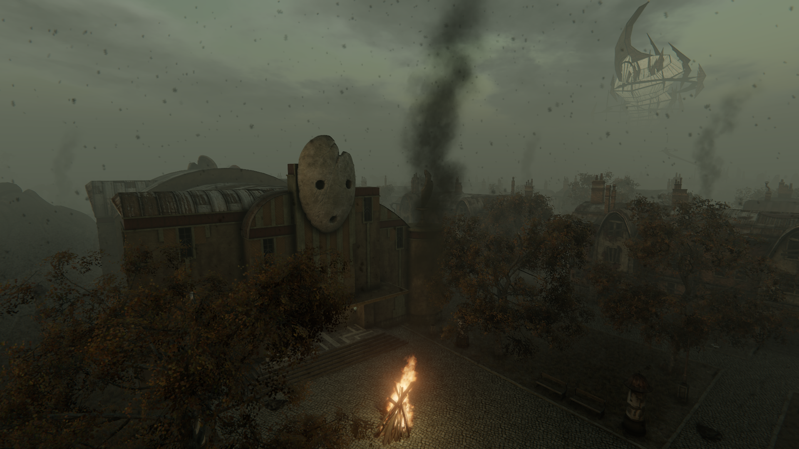
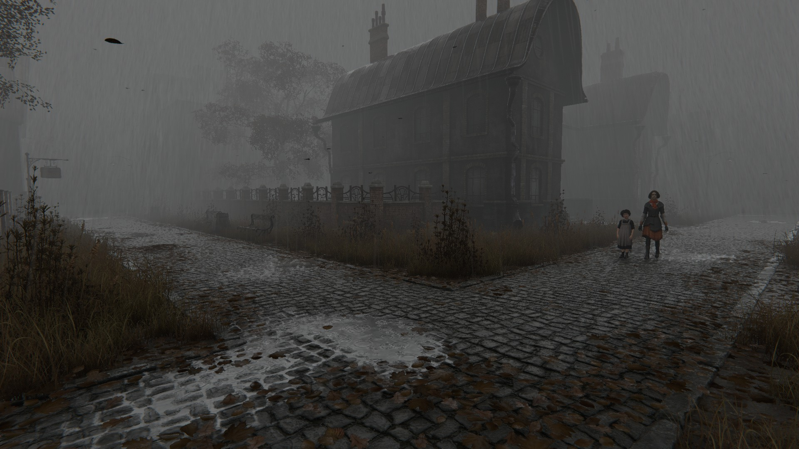
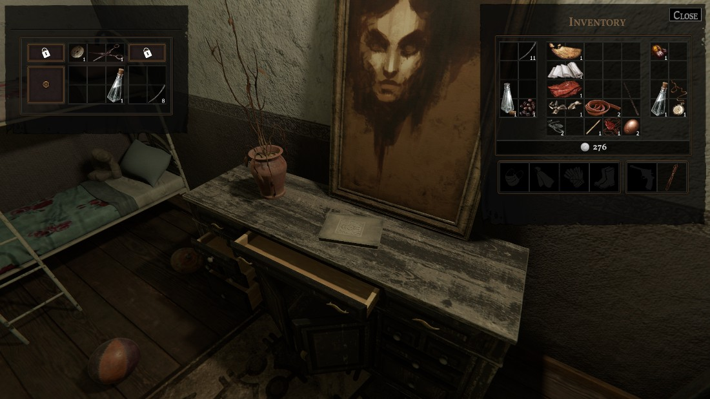
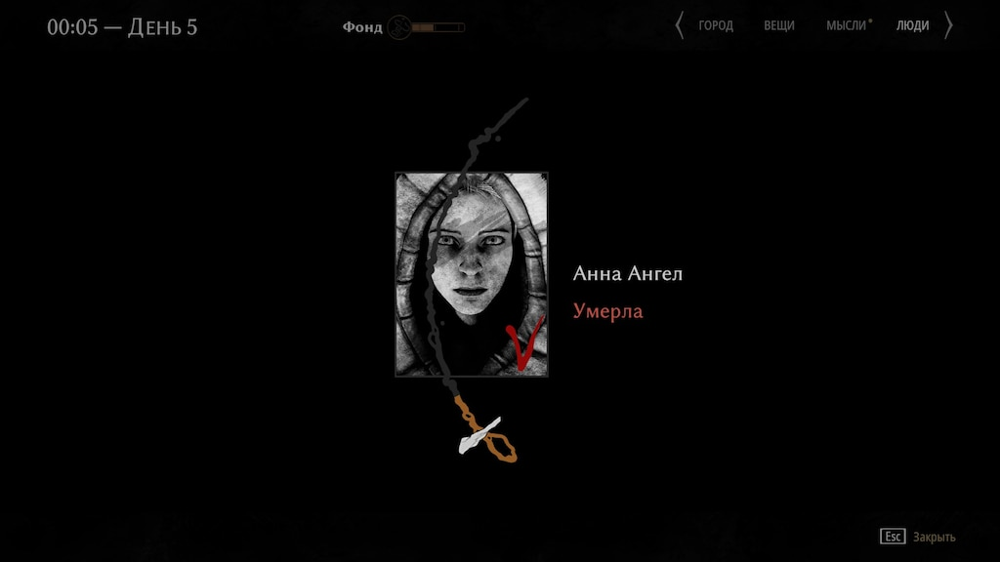
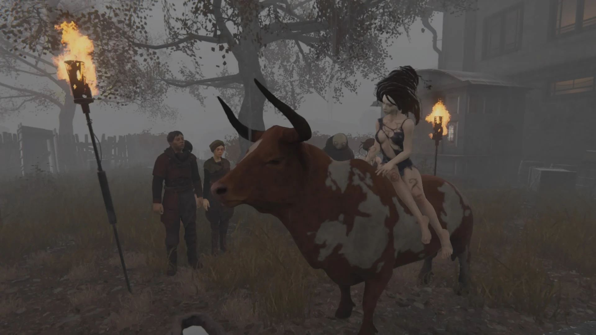
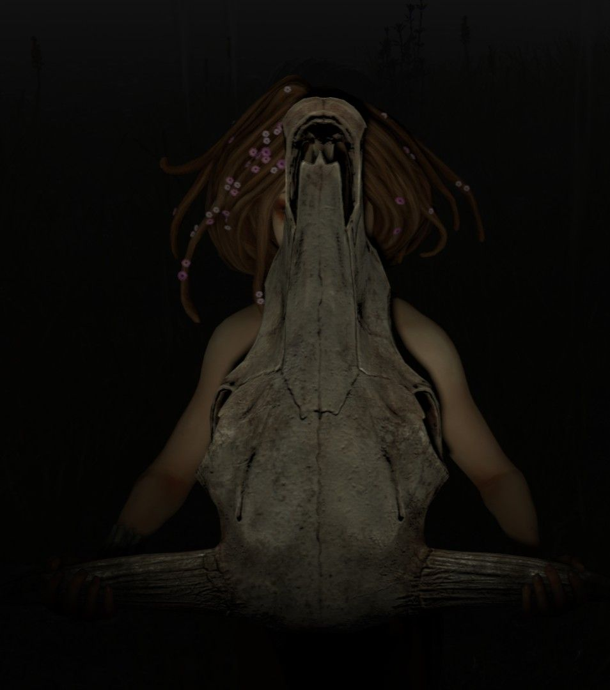

PATHOLOGIC 2
Боритесь с чумой. Делайте лекарства. Лечите людей. Делайте вскрытия. Торгуйте, чтобы достать необходимое. Деритесь и убивайте, если потребуется. Выживайте. «Мор» - сюжетная песочница о борьбе врача с эпидемией смертельной болезни в далеком степном городке.
Мор — авторский сюжетный арт-триллер, рассказывающий о
борьбе с эпидемией смертельной болезни в далеком степном
городке. Город гибнет на глазах. Приходится принимать
тяжелые решения — иногда заведомо проигрышные. Песочная
язва — это не просто болезнь. Всех не спасти.
Чума пожирает город. Главный целитель города погибает при
загадочных обстоятельствах, и вы должны занять его место.
Придется искать неожиданных союзников. Дети что-то знают,
и тщательно это скрывают — придется играть по их правилам.
У вас всего двенадцать дней.
Игровые персонажи
Игроку на выбор дается три персонажа. Каждый оказывается в Городе по той или иной причине, но по ходу игры их цель становится общей – победить Песочную язву и выжить. Каждый из персонажей видит болезнь по-своему, и методы борьбы с ней у них разные.
Бакалавр
Даниил Данковский
Знаменитый танатолог, посвятивший свою жизнь изучению
смерти и ее искоренению. Бакалавр верит в
рациональный научный подход, далекий от взглядов
Гаруспика и Самозванки.
Он прибыл в Город, чтобы изучить бессмертного местного
жителя. По иронии судьбы, этот человек умирает в день
прибытия Бакалавра от странной болезни, что потом
разойдется по всему городу.
В РАЗРАБОТКЕ
Гаруспик
Артемий Бурах
Сын Исидора Бураха, единственного врача в городе и
духовного лидера Уклада – менху. Его обучение в
столице было прервано войной. На фронте ему
приходит письмо отца с просьбой вернуться в
Город. Вернувшись, Гаруспик обнаруживает, что его
отец убит, а главный подозреваемый – сам Гаруспик.
В борьбе с чумой он использует научные знания,
полученные в процессе обучения на хирурга, и
опыт менху, практикующих традиционную медицину
и имеющих уникальное в Городе право – резать тела.
Самозванка
Клара
Загадочная девочка, утверждающая, что она может
творить чудеса. За эту силу ее и любят и ненавидят,
она постоянно балансирует на грани. В Городе она
появилась из ниоткуда – вылезла из могилы. Она считает,
что болезнь можно победить только чудом, и ее руки
способны его сотворить.
Клара называет себя святой, другие же утверждают, что
она вестница чумы. Правда неизвестна даже ей самой.
В РАЗРАБОТКЕ

Пережить эпидемию
Эпидемия правдоподобна: она разворачивается в реальном времени, влияя и на игровые механики, и на сюжет. Пока вы ищете ее истоки, она гуляет по улицам и разлагает Город; она может в любую минуту постучаться и в ваше тело. Сдать квест и на шаг приблизиться к цели полезно, но ваши начинания не будут стоить и гроша, если вы не доживете до их воплощения.
|  |  |
|---|
Везде не успеть, всех не спасти
Вы играете со временем наперегонки. Вам дано всего 12 дней на то, чтобы найти панацею, но это не единственная ваша задача: вам нужно выявить природу болезни, облегчить страдания больных, оказать профилактику здоровым, выполнить важные квесты, найти необходимые ресурсы, и, конечно же, не стоит забывать про сон. Вы быстро обнаружите, что везде не успеваете – придется пожертвовать тем или иным, чтобы успеть сделать то, что важнее. Порой жертвовать придется человеческими жизнями. Но не корите себя – даже если вы провели своевременное лечение, эти жизни могут быть потеряны из-за обычной удачи. Не всем везет в битве с болезнью.

Выживание
|
Даже врач – герой, борец с чумой – является всего лишь
человеком. Он, как и все, способен пасть ее жертвой, и
порой так необходимые больным ценные медикаменты ему
приходится тратить на себя. Выберете ли вы спасти от
заражения себя или незнакомца? А друга? Ребенка? Игра
будет ставить подобные выборы постоянно, и жить с
последствиями тоже придется вам.
|
|---|
|   |
Жить с последствиями, умирать с последствиями
Горечь смерти друга меркнет на фоне собственной.
Если ваш герой умрет, игра не даст вам избежать
последствий. Каждая смерть повлечет за собой штраф.
Игра продолжится, но с каждым разом все сложнее.
И нет, вам не удастся загрузить последнее сохранение
– игра помнит все.

Уникальный сеттинг
|
Попав в Город-на-Горхоне, вы столкнетесь с удивительно знакомыми пейзажами.
Маленький степной городок, застрявший где-то в XX веке, увлечет вас чувством
тепла и ностальгии, пусть и встретил он вас с холодной неприязнью.
|
|
|---|---|
|  |  |
Уклад играет ключевую роль в сюжете игры: его мировоззрение и практики влияют на поступки Гаруспика и, в меньшей степени, Самозванки. Жизнь степняков глубоко связана с их верованиями, многие из которых переняли жители Города — например, сакральность вскрытия тела.
Другие игры студии


Телефон: +7 (495) 952-59-99
Почта: mail@ice-pick.com